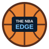

Get the Winners. Get the Edge.
Free, no-nonsense NFL picks and computer-generated score projections from Greggy the Greek's PanaGeoTech formula throughout the football season.
Home · Today's projections · Disclaimer
The NBA Edge
Explore completed daily issues and a selection from the classic NBA Edge.

Step inside the NBA Edge vault from yesteryear and check out our PAST ISSUES with our historical NBA predictions, ATS selections, betting analysis, and game projections powered by our proprietary forecasting formula. Revisit the archived issues that helped establish NBA Edge as one of the Internet's premier sources for free NBA winners, ATS picks, and professional basketball forecasting.
Classic issues featured manually curated weekly selections based on the PanaGeoTech projection formula. The “Three Ball” was a hypothetical combination of bets on selected games. Past performance does not imply future results.
Free, no-nonsense NFL picks and computer-generated score projections from Greggy the Greek's PanaGeoTech formula throughout the football season.